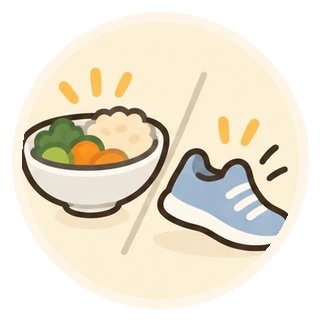
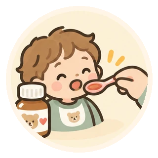

家族・支援者の方へ
大切な人も、自分も、大切に。
子どものこと、親のこと、薬のこと。気になることを整理しながら、必要な情報や相談先を見つけよう。
家族だけでなく、日々の暮らしを支える方も利用できます。
いま、どんなことが気になる？
困りごとに近いカードから選んでください。

子どもの薬をうまく飲ませたい粉薬・シロップなど、年齢や状況に合わせた方法を探す子どものお薬を調べる →
子どもの体と心が気になる子ども・若者向けの健康情報を見つける子ども・若者向け情報を見る →親や家族の薬が多い・飲み忘れる飲み忘れ、ふらつき、眠気などの困りごとを整理する高齢者向けの情報を見る →ひとりで抱え込まないために
家族の健康や介護には、すぐに答えが出ないこともあります。気になる変化をメモし、医師・薬剤師や地域の相談窓口に伝えることも、大切な一歩です。
呼吸や意識の異常、突然の麻痺など緊急性の高い症状がある場合は、相談先探しより119番への連絡を優先してください。